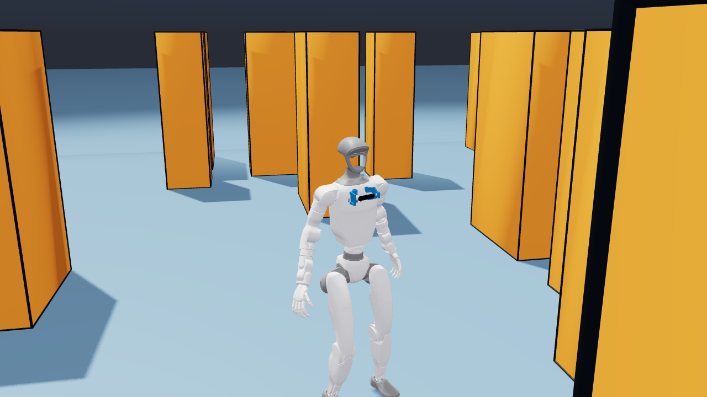
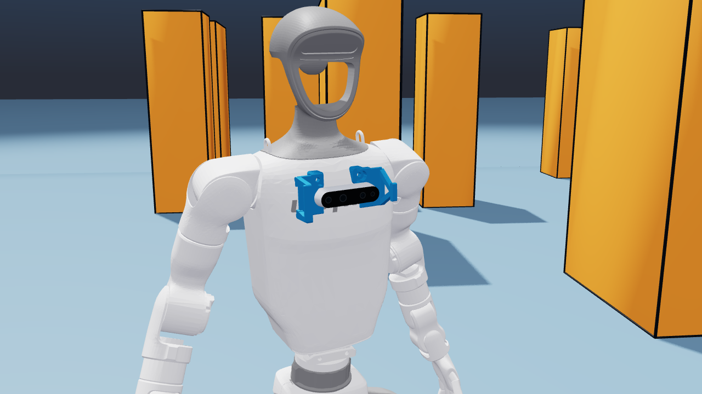

Build the skill
PPO and curriculum learning establish control using robot and task states available in simulation.
20knavigation expert · completed
Which visual information changes the robot’s next move? From dual-camera navigation to physical volleyball interaction.

Depth observations can be missing, delayed, or degraded. DSVR asks a more specific question: which local visual restoration makes the student’s action agree more closely with its expert?
Compare degraded and locally restored inputs under the same recurrent history. Use that training signal to support visual representations alongside a learned spatial gate.
Replace one selected region with its paired reference during training, while preserving the same pre-step recurrent history.
Δ = max(0, Edegraded − Erestored)E measures student–expert action error. Δ is an action-agreement proxy; the spatial gate is learned through training.
Visual navigation establishes the perception pipeline. Volleyball extends the research setting to movement, interception, and physical contact.
PPO and curriculum learning establish control using robot and task states available in simulation.
Distill actions from a frozen expert with two depth views, local recovery supervision, and recurrent memory.
Retain the visual encoders, spatial gate, and LSTM. Add a training-only privileged critic for closed-loop refinement.
The volleyball branch currently trains its privileged expert with a 40k-update budget. Visual distillation, LiDAR fusion, and fine-tuning are subsequent stages.
Actual simulator recordings, with their original versions identified. Current training and historical demonstrations are labeled separately.
Historical policy rollout · proj6 v2.2.1 · checkpoint 9000
proj1 legacy v6 · not current v1.0.0 policy results

Factory head depth and a RevG chest-mounted D435i provide complementary views. Each view is encoded and gated before fusion with proprioceptive history. Image: simulated camera layout.
Navigation expert and distillation training are complete. Visual fine-tuning and volleyball expert training are active. These result spaces will grow with completed evaluations.
Multi-seed comparisons with matched inputs and training budgets will appear here.
RESULTS TO FOLLOWExpert streak lengths, difficulty progression, and failure analysis will be reported after evaluation.
EXPERT TRAINING ACTIVECamera calibration and real-G1 closed-loop validation will be documented as separate experiments.
PLANNED4096 ENVS · CUDA 6 · 40k UPDATE BUDGET